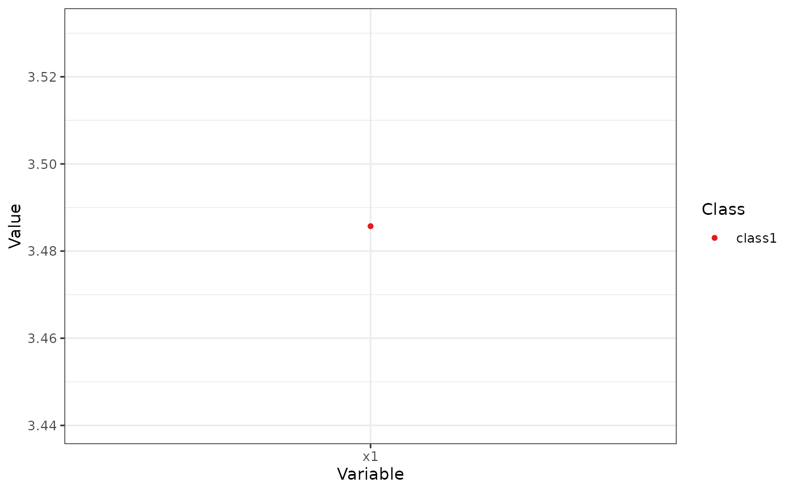

Creates a profile plot (ribbon plot) according to best practices, focusing on the visualization of classification uncertainty by showing:
Bars reflecting a confidence interval for the class centroids
Boxes reflecting the standard deviations within each class; a box encompasses +/- 64 percent of the observations in a normal distribution
Raw data, whose transparency is weighted by the posterior class probability, such that each observation is most clearly visible for the class it is most likely to be a member of.
Arguments
- x
An object containing the results of a mixture model analysis.
- variables
A character vectors with the names of the variables to be plotted (optional).
- ci
Numeric. What confidence interval should the error bars span? Defaults to a 95 percent confidence interval. Set to NULL to remove error bars.
- sd
Logical. Whether to display a box encompassing +/- 1SD Defaults to TRUE.
- add_line
Logical. Whether to display a line, connecting cluster centroids belonging to the same latent class. Defaults to FALSE, as it is not recommended to imply connectivity between the different variables on the X-axis.
- rawdata
Should raw data be plotted in the background? Setting this to TRUE might result in long plotting times.
- bw
Logical. Should the plot be black and white (for print), or color?
- alpha_range
The minimum and maximum values of alpha (transparency) for the raw data. Minimum should be 0; lower maximum values of alpha can help reduce overplotting.
- ...
Arguments passed to and from other functions.
Examples
df_plot <- data.frame(Variable = "x1",
Class = "class1",
Classes = 1,
Model = "equal var 1",
Value = 3.48571428571429,
se = 0.426092805342181,
Value.Variances = 3.81265306156537,
se.Variances = 1.17660769119959)
plot_profiles(list(df_plot = df_plot, df_raw = NULL),
ci = NULL, sd = FALSE, add_line = FALSE,
rawdata = FALSE, bw = FALSE)
